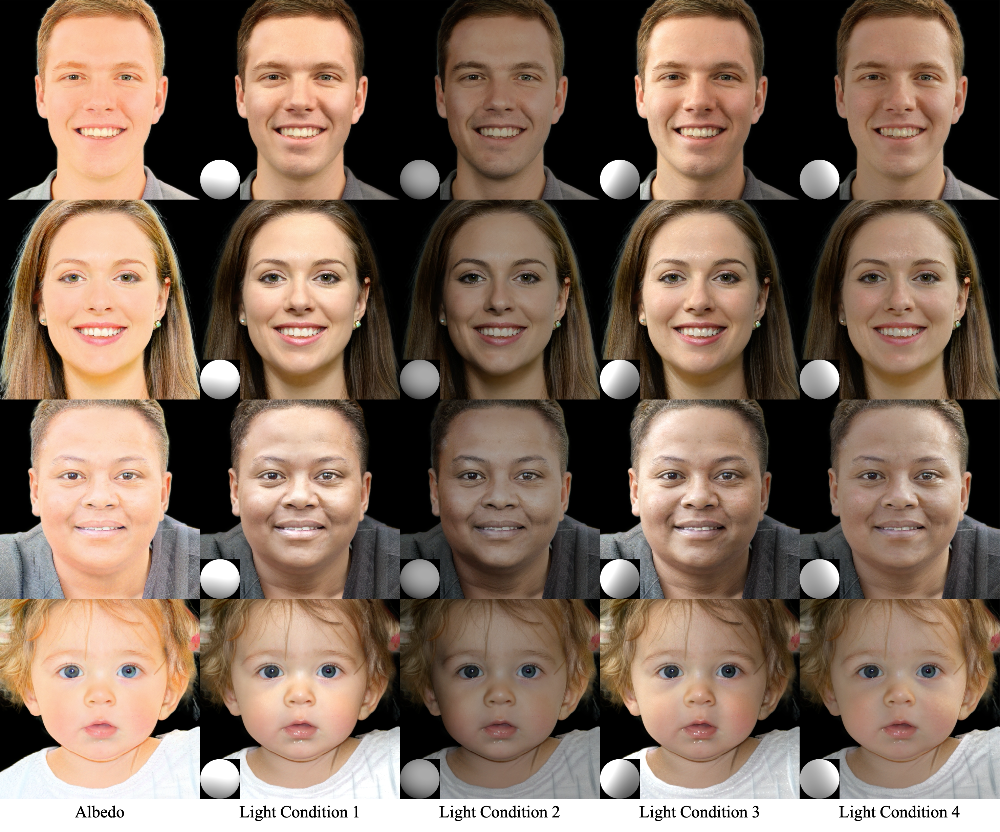
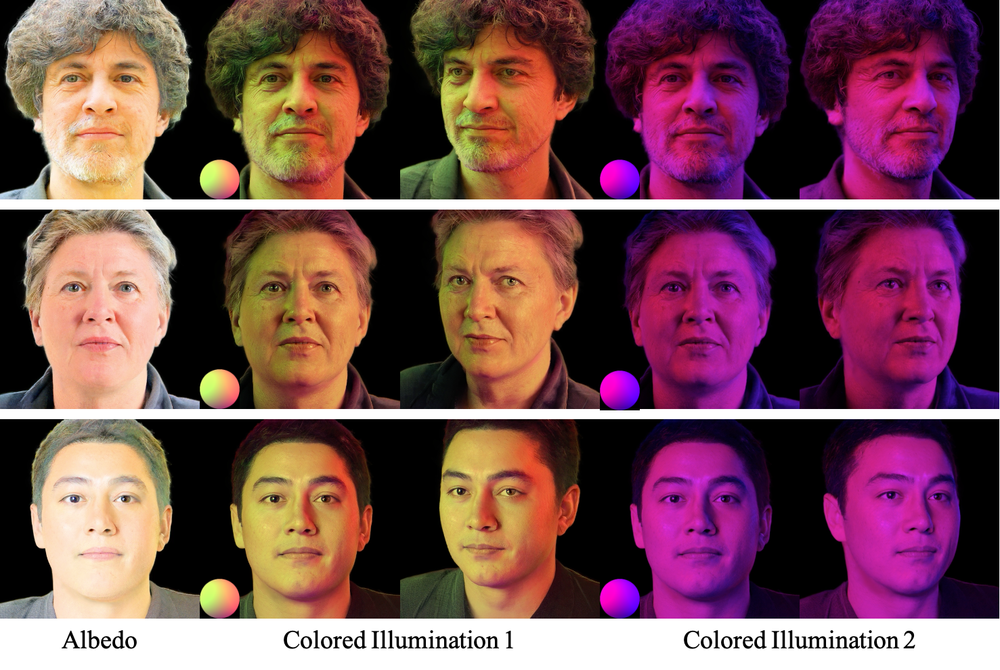
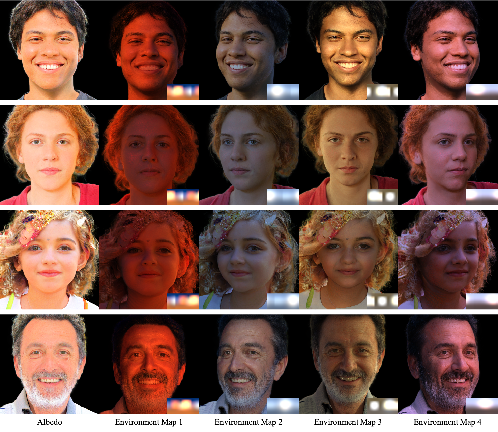

Relighting and novel view synthesis of human portraits are essential in applications such as portrait photography, virtual reality (VR), and augmented reality (AR). Despite recent progress, 3D-aware portrait relighting remains challenging due to the demands for photorealistic rendering, real-time performance, and generalization to unseen subjects. Existing works either rely on supervision from limited and expensive light stage captured data or produce suboptimal results. Moreover, many works are based on generative NeRFs, which suffer from poor 3D consistency and low real-time performance. We resort to recent progress on generative 3D Gaussians and design a lighting model based on a unified neural radiance transfer representation, which responds linearly to incident light. Using only in-the-wild images, our method achieves state-of-the-art relighting results and a significantly faster rendering speed (x12) compared to previous 3D-aware portrait relighting research.


